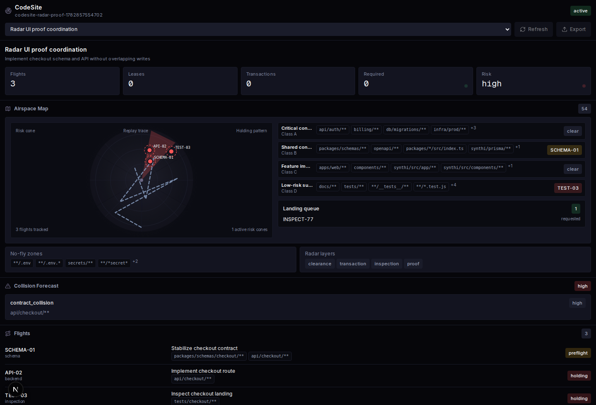
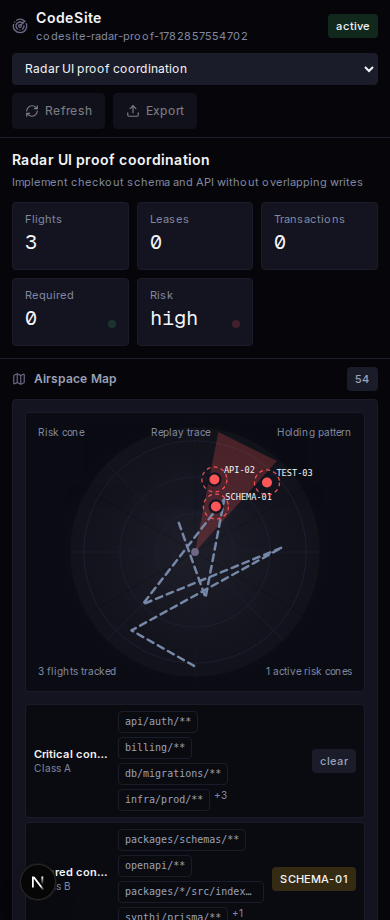

codesite-radar-ui-desktop.png
codesite-radar-ui-mobile.pngDocker-backed browser proof for the semantic radar graph, risk cone, replay trace, holding patterns, and landing queue.
Evidence JSON: codesite-radar-ui-proof.json
Stored in repo tmp/codesite-dojo-proof

codesite-radar-ui-desktop.png
codesite-radar-ui-mobile.png